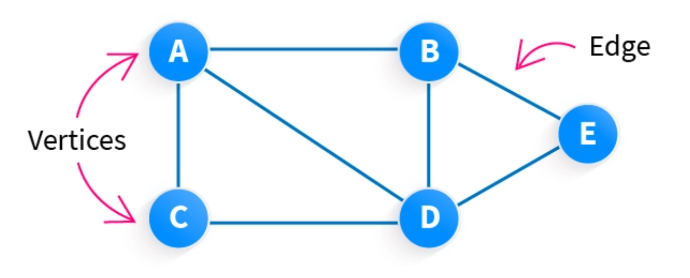
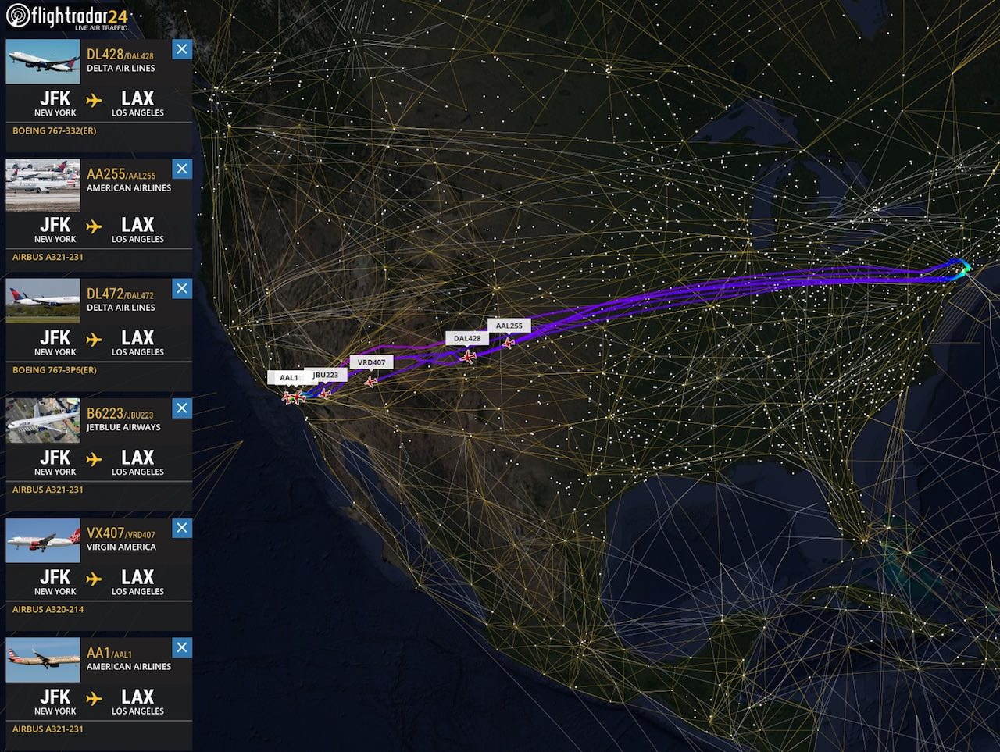
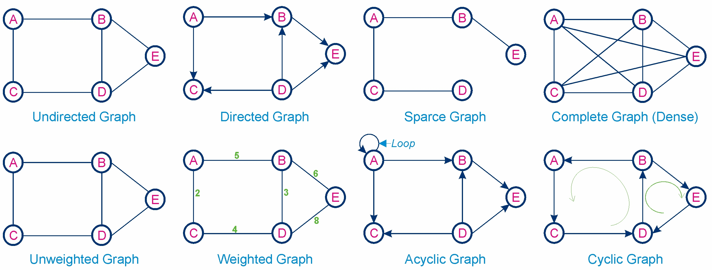
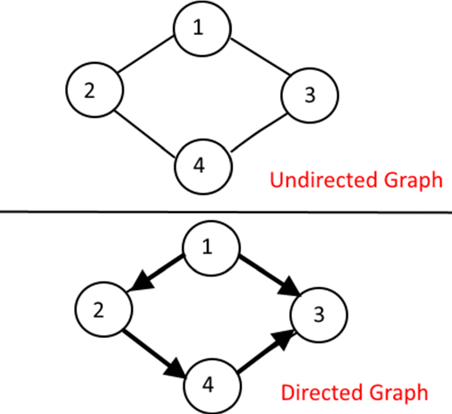
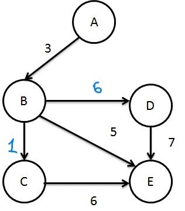

What is a Graph?
A graph is a data structure consisting of nodes (also called vertices) connected by edges. It is used to model relationships or connections, such as social networks, transportation systems, or communication networks.

Structure of a Graph:
A graph is composed of vertices and edges. The key components are:
- Vertex (Node): A fundamental unit of a graph.
- Edge: A connection between two vertices.
- Weight (Optional): A value associated with an edge, representing cost, distance, or other metrics.
- Direction (Optional): Indicates the edge's flow from one vertex to another in directed graphs.

Basic Concepts in Graph Data Structure
Example Graph Structure:
A--B
| /
C--D
1. Vertices and Edges
Graphs consist of vertices (nodes) connected by edges. Types of graphs include:
- Undirected Graph: Edges have no direction.
Example: A connection between cities where travel is possible in both directions. - Directed Graph (Digraph): Edges have a specific direction.
Example: Flight routes where travel is possible only in one direction. - Weighted Graph: Edges have weights associated with them.
Example: A map where edges represent distances between cities.
2. Types of Graphs
- Simple Graph: Contains no loops or multiple edges.
- Complete Graph: Every vertex is connected to every other vertex.
- Cyclic Graph: Contains at least one cycle (a path that starts and ends at the same vertex).
- Acyclic Graph: Contains no cycles (e.g., Directed Acyclic Graphs).
3. Subgraphs
A subgraph is a subset of a graph's vertices and edges. It represents a smaller portion of the original graph.
- Example: In the graph above, a subgraph could include vertices
A,B, andCwith their connecting edges.
4. Other Fundamental Concepts
- Degree of a Vertex: The number of edges connected to a vertex.
Example: In the above graph, the degree ofAis 2. - Path: A sequence of vertices connected by edges.
Example: The path fromAtoDisA -> C -> D. - Cycle: A path where the first and last vertices are the same.
Example:A -> C -> B -> A. - Connected Graph: Every vertex is reachable from any other vertex.
- Disconnected Graph: Some vertices cannot be reached from others.
5. Graph Traversals
Traversals are methods of visiting vertices in a graph:
- Depth-First Search (DFS): Explores as far as possible along each branch before backtracking.
- Breadth-First Search (BFS): Explores all neighbors of a vertex before moving to the next level.
Example: Consider a network of cities connected by roads where vertices represent cities, and edges represent roads.

Understanding the Graph Process
A graph represents relationships between entities, making it suitable for modeling complex systems. Let’s break down how a graph works.
- Connections:
Edges represent relationships, such as social connections or physical roads. - Traversal:
Traversing a graph involves visiting vertices to find relationships or paths.
Real-Time Examples of Graphs
Graphs are widely used in real-world applications. Some examples include:
- Social Networks: Represent users as vertices and friendships as edges.
- Transportation Systems: Model cities and routes using graphs.
- Web Crawling: Represent web pages as vertices and hyperlinks as edges.
- Computer Networks: Represent devices as vertices and connections as edges.
- Machine Learning: Represent feature interactions in models like Graph Neural Networks.
Key Operations of a Graph:
- Insertion: Adding a new vertex or edge to the graph. This operation ensures that the graph's structure remains valid.
- Deletion: Removing a vertex or edge from the graph. The graph must handle such changes without losing its connectivity where applicable.
-
Traversal: Visiting all the vertices or edges of the graph in a specific order. Common traversal methods include:
- Depth-First Search (DFS): Explore as far as possible along one branch before backtracking.
- Breadth-First Search (BFS): Explore all neighbors at the current depth before moving deeper.
- Search: Finding a specific vertex or edge in the graph. Search operations are fundamental for tasks like pathfinding and connectivity checks.
- Shortest Path: Determining the shortest path between two vertices. Algorithms like Dijkstra's or Bellman-Ford are commonly used.
- Cycle Detection: Checking if the graph contains any cycles, important in dependency resolution and circuit detection.
A Real-World Example
- Insertion: Adding a new city or road to a map.
Example: Adding a new route in a GPS system. - Deletion: Removing a city or road from a map.
Example: Removing a discontinued bus route. - Traversal: Navigating through all connected points in a network.
Example: Exploring all flight routes from a given city. - Search: Find a specific city or route in a transportation network.
Example: Searching for a direct flight between two cities. - Shortest Path: Determine the quickest or least-cost route.
Example: Calculating the fastest driving route between two locations. - Cycle Detection: Check if there are redundant paths or loops in a system.
Example: Identifying cyclic dependencies in a project management task graph.

Differences Between Graphs and Trees
Graphs and trees are both fundamental data structures in computer science but have distinct properties and applications. Below is a comparison to clarify the differences:
| Aspect | Graph | Tree |
|---|---|---|
| Definition | A graph is a collection of vertices (nodes) connected by edges, where connections can be arbitrary. | A tree is a special type of graph that is connected and acyclic, with a hierarchical structure. |
| Structure | Can have cycles, multiple paths between nodes, and no specific root. | Has a single root, no cycles, and exactly one path between any two nodes. |
| Connectivity | Can be disconnected (not all vertices are connected). | Always connected; all nodes are reachable from the root. |
| Types of Edges | Can have undirected or directed edges, as well as weighted edges. | Typically has undirected edges in simple trees. Directed edges are used in rooted or binary trees. |
| Number of Edges | Can have any number of edges, even exceeding the number of vertices. | Always has exactly (n - 1) edges for n nodes. |
| Cycle | May contain cycles, depending on the type of graph (e.g., directed, undirected). | Never contains cycles; acyclic by definition. |
| Traversal | Traversal methods include depth-first search (DFS) and breadth-first search (BFS). | Traversal methods include pre-order, in-order, post-order, and level-order. |
| Applications | Modeling networks (e.g., social networks, road maps, communication systems). | Hierarchical data (e.g., file systems, organizational charts, decision-making processes). |
| Flexibility | More flexible; supports multiple representations like adjacency lists and matrices. | More rigid due to its hierarchical and acyclic nature. |
| Examples | Social networks, web graphs, road maps, electrical circuits. | Binary trees, binary search trees, AVL trees, heaps. |
While trees are a subset of graphs with specific rules, graphs are more general and versatile. Understanding the differences helps choose the right data structure for the problem at hand.
Implementation of Graphs
Graphs can be implemented in various ways, primarily using:
- Adjacency List: A space-efficient way where each vertex stores a list of its adjacent vertices.
- Usage: Efficient for sparse graphs and supports dynamic graph structures.
- Drawbacks: Traversing all edges requires accessing each vertex's adjacency list.
- Adjacency Matrix: A 2D matrix where each cell (i, j) indicates the presence of an edge between vertex i and vertex j.
- Usage: Suitable for dense graphs and for quickly checking edge existence.
- Drawbacks: Requires O(V^2) space regardless of the graph's density.
Comparison of Graph Implementation: Adjacency List vs Adjacency Matrix
| Aspect | Graph Using Adjacency List | Graph Using Adjacency Matrix |
|---|---|---|
| Memory Usage | Efficient for sparse graphs; memory depends on the number of edges. | Requires O(V^2) space regardless of sparsity. |
| Edge Lookup Time | O(V) in the worst case for an edge check. | O(1) time for an edge check. |
| Insertion/Deletion | Efficient for dynamic graphs; requires list updates. | Inefficient for dynamic graphs; involves matrix resizing. |
| Traversal Complexity | Efficient for sparse graphs; depends on the number of edges (O(V + E)). | Less efficient for sparse graphs; traversal is O(V^2). |
| Space Efficiency | Highly efficient for sparse graphs with fewer edges. | Wasteful for sparse graphs but efficient for dense graphs. |
| Flexibility | Highly flexible; can easily adapt to changes in graph structure. | Limited flexibility; requires a predefined matrix size or resizing. |
| Implementation Complexity | More complex due to dynamic list management. | Simpler; straightforward matrix indexing. |
| Best Suited For | Sparse graphs and scenarios where edge additions/removals are frequent. | Dense graphs or scenarios requiring constant-time edge lookups. |
Types of Graphs
Graphs are categorized into various types based on their structure and properties:

- Undirected Graph: A graph in which edges have no direction, meaning the connection between two vertices is bidirectional.
- Usage: Commonly used in social networks and road networks.
- Examples: Friendship graphs, collaboration networks.
- Directed Graph (Digraph): A graph where edges have a direction, meaning connections are one-way.
- Usage: Used in workflows, dependency graphs, and navigation systems.
- Properties: Can have cycles or be acyclic (DAG).
- Sparse Graph: A graph in which the number of edges is relatively small compared to the number of vertices.
- Usage: Efficient storage and computation, often used in large-scale systems like the internet or social networks.
- Properties: Ideal for adjacency lists since most entries are empty.
- Examples: Road maps with limited connections, certain scientific networks.
- Complete Graph: A graph in which every pair of vertices is connected by a unique edge.
- Usage: Used in modeling fully connected networks where every node interacts with every other node.
- Properties: Contains the maximum number of edges possible for a given set of vertices.
- Examples: Fully connected peer-to-peer networks, small group communication models.
- Weighted Graph: A graph where edges have weights associated with them, representing costs, distances, or capacities.
- Usage: Used in shortest path algorithms like Dijkstra's and network flow problems.
- Examples: Transportation networks, communication networks.
- Cyclic Graph: A graph that contains at least one cycle, where a cycle is a path that starts and ends at the same vertex.
- Usage: Models systems with feedback loops.
- Drawbacks: Requires special handling in algorithms like topological sorting.
- Acyclic Graph: A graph with no cycles, often used in scenarios where dependency resolution is required.
- Usage: Commonly used in project scheduling and hierarchical structures.
- Examples: Directed Acyclic Graphs (DAGs) in version control systems.
Comparison of Types of Graphs
| Type | Key Properties | Best Suited For |
|---|---|---|
| Undirected Graph | Edges have no direction; bidirectional connections. | Social networks, road networks. |
| Directed Graph | Edges have direction; connections are one-way. | Workflows, navigation systems. |
| Weighted Graph | Edges have weights representing costs, distances, or capacities. | Shortest path problems, transportation networks. |
| Cyclic Graph | Contains at least one cycle; paths that start and end at the same vertex. | Feedback systems, recurrent processes. |
| Acyclic Graph | No cycles; used for hierarchical or dependency structures. | Project scheduling, version control systems. |
| Sparse Graph | Few edges relative to vertices; low density. | Large networks, web structures. |
| Complete Graph | Every pair of vertices is connected by a unique edge. | Fully connected networks, communication models. |
Directed and Undirected Graphs
Graphs are fundamental mathematical structures that represent pairwise relationships between objects. They are extensively used in computer science, physics, biology, and many other fields to solve complex problems and model real-world phenomena. A graph consists of two main components: vertices (or nodes) and edges (connections between the nodes). Based on the nature of the edges, graphs can be categorized into directed and undirected graphs, each serving distinct purposes and applications.

- Directed Graph (Digraph):
A directed graph is characterized by edges that have a specific direction, signifying a one-way relationship between nodes. These are particularly useful in scenarios where directionality is crucial.- Usage: Commonly used in modeling workflows, citation networks, social media interactions, web page rankings, and navigation systems.
- Properties:
- Each edge is represented as an ordered pair of vertices (u, v), indicating a connection from vertex u to vertex v.
- Self-loops (edges from a vertex to itself) and parallel edges may exist, depending on the application.
- Advantages:
- Effectively captures directional relationships.
- Enables representation of processes like data flow or dependency resolution.
- Disadvantages: Complexity increases with larger datasets due to the need to track directionality for each edge.
- Example:
Vertices: A, B, C Edges: A -> B, B -> C, A -> C
- Undirected Graph:
An undirected graph is defined by edges that lack a direction, implying a mutual or bidirectional relationship between nodes. These graphs are simpler and widely used in scenarios where directionality is irrelevant.- Usage: Often used in modeling road networks, social networks (e.g., friendships), communication networks, and biological interactions.
- Properties:
- Each edge is an unordered pair of vertices {u, v}, indicating a bidirectional connection between u and v.
- Self-loops are generally not allowed, but parallel edges may exist in some variations.
- Advantages:
- Simpler representation when directional relationships are not required.
- Efficient for applications that deal with mutual connections.
- Disadvantages: Cannot explicitly represent one-way relationships.
- Example:
Vertices: A, B, C Edges: A -- B, B -- C, A -- C
Comparison of Directed and Undirected Graphs
Type Key Properties Best Suited For Directed Graph Edges have a specific direction, indicating a one-way relationship. Allows for modeling dependencies and processes. Workflows, navigation systems, citation networks, and dependency modeling. Undirected Graph Edges have no direction, representing mutual relationships. Simpler to analyze and visualize. Social networks, communication networks, and road systems.
Applications of Graphs
Graphs have a wide array of applications across various domains. Some notable examples include:
- Transportation: Modeling road networks, railway systems, and flight routes.
- Data Science: Representing relationships in datasets, clustering, and network analysis.
- Biology: Analyzing protein-protein interactions and gene regulatory networks.
- Technology: Modeling internet topology and search engine algorithms.
Cyclic and Acyclic Graphs
Graphs can also be categorized based on the presence or absence of cycles:
- Cyclic Graphs:
A cyclic graph contains at least one cycle, which is a path that starts and ends at the same vertex, with all edges and vertices distinct (except the starting and ending vertex).
- Usage: Often used in circuit design, network modeling, and dependency resolution where feedback loops are involved.
- Properties:
- A cycle must involve at least three vertices.
- Both directed and undirected graphs can have cycles.
- Example:
Vertices: A, B, C, D Edges: A -> B, B -> C, C -> A
- Acyclic Graphs:
An acyclic graph contains no cycles, meaning there is no path that starts and ends at the same vertex.
- Usage: Commonly used in hierarchical structures like organization charts, dependency graphs, and family trees.
- Properties:
- If the graph is directed and acyclic, it is known as a Directed Acyclic Graph (DAG).
- In an undirected graph, an acyclic graph is a tree or forest.
- Example:
Vertices: A, B, C, D Edges: A -> B, B -> C, C -> D
Comparison of Cyclic and Acyclic Graphs
Type Key Properties Best Suited For Cyclic Graph Contains at least one cycle; applicable to both directed and undirected graphs. Modeling feedback systems, circuits, and network dependencies. Acyclic Graph Does not contain any cycles; includes trees and DAGs. Representing hierarchies, scheduling tasks, and dependency management.
Applications of Graphs
Graphs have a wide array of applications across various domains. Some notable examples include:
- Transportation: Modeling road networks, railway systems, and flight routes.
- Data Science: Representing relationships in datasets, clustering, and network analysis.
- Biology: Analyzing protein-protein interactions and gene regulatory networks.
- Technology: Modeling internet topology and search engine algorithms.
Implementing Weighted and Unweighted Graphs
A graph is a data structure that consists of a set of nodes (also called vertices) and a set of edges that connect pairs of nodes. Graphs can be classified into weighted and unweighted based on the type of edges they have:
Unweighted Graph
An unweighted graph is a graph where all edges have no weights or equal weights. It can be used for scenarios where the connections between nodes are important, but their cost or distance is not a concern.
Example of an Unweighted Graph
Consider the following unweighted graph:
A - B - C | | D - E
In this graph:
- Nodes A, B, C, D, and E are connected by edges.
- No edge has a weight associated with it.
Weighted Graph
A weighted graph is a graph where each edge has an associated weight, often used to represent costs, distances, or capacities.
Example of a Weighted Graph
Consider the following weighted graph:

In this graph:
- Edge A->B has a weight of 3.
- Edge B->C has a weight of 1.
- Edge B->D has a weight of 6.
- Edge B->E has a weight of 5.
- Edge C->E has a weight of 6.
- Edge D->E has a weight of 7.
Operations and their Algorithms:
1. Insert Operation:
a) For unweighted graphs, add an edge between two nodes.
b) For weighted graphs, add an edge with its associated weight.
2. Search Operation:
a) Use BFS or DFS to find if two nodes are connected in unweighted graphs.
b) For weighted graphs, use algorithms like Dijkstra's or Bellman-Ford to find the shortest path.
3. Traversal:
a) Breadth-First Search (BFS): Traverse the graph level by level.
b) Depth-First Search (DFS): Traverse as deep as possible before backtracking.
Implementation Code
// C program to represent a graph as adjacency lists #include <stdio.h> #include <stdlib.h> // Struct to represent a node in the adjacency list typedef struct Node { int vertex; int weight; // Weight is optional for unweighted graphs struct Node* next; } Node; // Struct to represent the graph typedef struct Graph { int numVertices; Node** adjLists; } Graph; // Function to create a new node Node* createNode(int vertex, int weight) { Node* newNode = (Node*)malloc(sizeof(Node)); newNode->vertex = vertex; newNode->weight = weight; newNode->next = NULL; return newNode; } // Function to create a graph Graph* createGraph(int vertices) { Graph* graph = (Graph*)malloc(sizeof(Graph)); graph->numVertices = vertices; graph->adjLists = malloc(vertices * sizeof(Node*)); for (int i = 0; i < vertices; i++) { graph->adjLists[i] = NULL; } return graph; } // Function to add an edge to an unweighted graph void addEdge(Graph* graph, int src, int dest) { Node* newNode = createNode(dest, 0); newNode->next = graph->adjLists[src]; graph->adjLists[src] = newNode; newNode = createNode(src, 0); newNode->next = graph->adjLists[dest]; graph->adjLists[dest] = newNode; } // Function to add an edge to a weighted graph void addWeightedEdge(Graph* graph, int src, int dest, int weight) { Node* newNode = createNode(dest, weight); newNode->next = graph->adjLists[src]; graph->adjLists[src] = newNode; newNode = createNode(src, weight); newNode->next = graph->adjLists[dest]; graph->adjLists[dest] = newNode; } // Function to print the graph void printGraph(Graph* graph) { for (int v = 0; v < graph->numVertices; v++) { Node* temp = graph->adjLists[v]; printf("Vertex %d:\n", v); while (temp) { printf(" -> %d (weight %d)", temp->vertex, temp->weight); temp = temp->next; } printf("\n"); } } int main() { Graph* graph = createGraph(5); // Add edges for weighted graph example addWeightedEdge(graph, 0, 1, 3); addWeightedEdge(graph, 1, 2, 1); addWeightedEdge(graph, 1, 3, 6); addWeightedEdge(graph, 1, 4, 5); addWeightedEdge(graph, 2, 4, 6); addWeightedEdge(graph, 3, 4, 7); printGraph(graph); return 0; }
Output
Vertex 0: -> 1 (weight 3) Vertex 1: -> 4 (weight 5) -> 3 (weight 6) -> 2 (weight 1) -> 0 (weight 3) Vertex 2: -> 4 (weight 6) -> 1 (weight 1) Vertex 3: -> 4 (weight 7) -> 1 (weight 6) Vertex 4: -> 3 (weight 7) -> 2 (weight 6) -> 1 (weight 5)
Complexity Analysis
Time Complexity:
O(V + E) for traversal operations (BFS/DFS).
Space Complexity:
O(V + E) for storing adjacency lists.
Summary
This implementation demonstrates the difference between weighted and unweighted graphs. Weighted graphs allow edges to have associated weights, making them useful for scenarios involving costs, distances, or capacities. Unweighted graphs are simpler and ideal for situations where weights are not relevant.
Benefits of Using Graphs
- Versatility: Graphs can represent a wide range of problems, from social networks to road maps.
- Efficient Algorithms: Algorithms like BFS, DFS, and Dijkstra's help solve complex graph problems efficiently.
- Scalability: Graphs can handle a large number of nodes and edges.
Graph Traversal Algorithms
Graph traversal is the process of visiting all the nodes in a graph in a systematic manner. Traversal algorithms are fundamental for understanding and manipulating graph structures. Two widely used graph traversal techniques are **Breadth-First Search (BFS)** and **Depth-First Search (DFS)**. These techniques help in solving various problems like finding paths, detecting cycles, and exploring connectivity.
Breadth-First Search (BFS)
BFS is an algorithm for traversing or searching tree or graph data structures. It explores all the nodes at the present depth before moving on to the nodes at the next depth level. BFS is implemented using a queue.
Steps:- Start at the source node (root).
- Enqueue the source node and mark it as visited.
- While the queue is not empty, dequeue a node, process it, and enqueue all its unvisited neighbors.
Depth-First Search (DFS)
DFS is an algorithm for traversing or searching tree or graph data structures. It explores as far as possible along each branch before backtracking. DFS can be implemented using recursion or a stack.
Steps:- Start at the source node (root).
- Mark the current node as visited.
- Recursively visit all its unvisited neighbors.
Implementation Code
// C program for Graph Traversal Algorithms #include#include #include #define MAX_NODES 100 // Adjacency Matrix representation int graph[MAX_NODES][MAX_NODES]; bool visited[MAX_NODES]; int queue[MAX_NODES], front = -1, rear = -1; // Add an edge to the graph void addEdge(int u, int v) { graph[u][v] = 1; graph[v][u] = 1; // For undirected graphs } // BFS Implementation void BFS(int start, int numNodes) { front = rear = 0; queue[rear] = start; visited[start] = true; printf("BFS Traversal: "); while (front <= rear) { int current = queue[front++]; printf("%d ", current); for (int i = 0; i < numNodes; i++) { if (graph[current][i] && !visited[i]) { queue[++rear] = i; visited[i] = true; } } } printf("\n"); } // DFS Implementation void DFS(int node, int numNodes) { visited[node] = true; printf("%d ", node); for (int i = 0; i < numNodes; i++) { if (graph[node][i] && !visited[i]) { DFS(i, numNodes); } } } // Main program to test graph traversal algorithms int main() { int numNodes = 6; // Initialize the graph and visited array for (int i = 0; i < numNodes; i++) { for (int j = 0; j < numNodes; j++) { graph[i][j] = 0; } visited[i] = false; } // Create a sample graph addEdge(0, 1); addEdge(0, 2); addEdge(1, 3); addEdge(1, 4); addEdge(2, 5); // Perform BFS BFS(0, numNodes); // Reset visited array for DFS for (int i = 0; i < numNodes; i++) { visited[i] = false; } // Perform DFS printf("DFS Traversal: "); DFS(0, numNodes); printf("\n"); return 0; }
Output
BFS Traversal: 0 1 2 3 4 5 DFS Traversal: 0 1 3 4 2 5
Complexity Analysis
- Time Complexity: O(V + E), where V is the number of vertices and E is the number of edges.
- Space Complexity: O(V) for storing the visited array and queue/stack.
Applications
- Path Finding: BFS can be used to find the shortest path in an unweighted graph.
- Cycle Detection: DFS can be used to detect cycles in a graph.
- Topological Sorting: DFS is used in directed acyclic graphs (DAGs) for topological ordering.
- Connected Components: Both BFS and DFS can identify connected components in a graph.
Shortest Path Algorithms
Shortest Path Algorithms are used to find the minimum distance or cost between nodes in a graph. These algorithms are fundamental in graph theory and have applications in navigation systems, network routing, and resource optimization.
Types of Shortest Path Problems
- Single-Source Shortest Path: Finds the shortest path from a source node to all other nodes in the graph (e.g., Dijkstra's Algorithm).
- All-Pairs Shortest Path: Finds the shortest paths between all pairs of nodes (e.g., Floyd-Warshall Algorithm).
- Single-Pair Shortest Path: Finds the shortest path between two specific nodes.
Popular Shortest Path Algorithms
- Dijkstra's Algorithm: A greedy algorithm that works on graphs with non-negative edge weights.
- Bellman-Ford Algorithm: Works with graphs that may have negative edge weights, but not negative weight cycles.
- Floyd-Warshall Algorithm: A dynamic programming approach to solve the all-pairs shortest path problem.
- A* Algorithm: A heuristic-based algorithm used in scenarios like game development and pathfinding.
Example: Dijkstra's Algorithm
Consider the following graph:
Graph: A --4-- B A --2-- C B --3-- C B --6-- D C --1-- D Steps of Dijkstra's Algorithm: 1. Start at source node A. 2. Initialize distances: A=0, B=∞, C=∞, D=∞. 3. Update neighbors of A: B=4, C=2. 4. Move to the node with the smallest distance (C). 5. Update neighbors of C: D=3. 6. Move to the next smallest distance node (B). 7. Continue until all nodes are visited. Shortest Path from A to D: A -> C -> D (Cost: 3)
Example: Floyd-Warshall Algorithm
Consider the same graph:
Adjacency Matrix Representation: A B C D A 0 4 2 ∞ B 4 0 3 6 C 2 3 0 1 D ∞ 6 1 0 Steps: 1. Use each node as an intermediate node. 2. Update distances to find shortest paths between all pairs. Result: A -> D: Cost = 3 B -> D: Cost = 4 ...
Complexity Analysis
Dijkstra's Algorithm:
Time Complexity: O((V + E) log V) with a priority queue.
Space Complexity: O(V) for distances and visited sets.
Bellman-Ford Algorithm:
Time Complexity: O(V × E).
Space Complexity: O(V) for distances.
Floyd-Warshall Algorithm:
Time Complexity: O(V³).
Space Complexity: O(V²) for the distance matrix.
Applications of Shortest Path Algorithms
- Navigation Systems: Finding the shortest route between two locations.
- Network Routing: Optimizing data transfer across computer networks.
- Logistics and Transportation: Planning efficient delivery routes.
- Game Development: AI pathfinding in games.
Minimum Spanning Tree (MST)
A Minimum Spanning Tree (MST) of a weighted undirected graph is a subset of its edges that connects all vertices together, without any cycles, and with the minimum possible total edge weight. MSTs are widely used in network design, clustering, and optimizing paths in graphs.
Properties of MST
- Number of edges: An MST has exactly (V - 1) edges, where V is the number of vertices in the graph.
- No cycles: MSTs are acyclic, meaning they do not contain any loops.
- Minimum weight: The sum of the edge weights in an MST is the smallest among all possible spanning trees.
Popular Algorithms for Finding MST
- Kruskal's Algorithm: A greedy approach that sorts all edges by weight and adds them to the MST if they do not form a cycle.
- Prim's Algorithm: Another greedy approach that starts with a single vertex and grows the MST by adding the smallest edge that connects a vertex in the MST to one outside it.
Example: MST using Kruskal's Algorithm
Consider the following graph with vertices and weighted edges:
Graph: A --1-- B A --3-- C B --4-- C B --2-- D C --5-- D Steps of Kruskal's Algorithm: 1. Sort edges: (A-B:1), (B-D:2), (A-C:3), (B-C:4), (C-D:5). 2. Add (A-B:1) to MST. 3. Add (B-D:2) to MST. 4. Add (A-C:3) to MST. Resulting MST: A --1-- B A --3-- C B --2-- D
Example: MST using Prim's Algorithm
Consider the same graph:
Graph: A --1-- B A --3-- C B --4-- C B --2-- D C --5-- D Steps of Prim's Algorithm: 1. Start from vertex A. 2. Add (A-B:1) to MST. 3. Add (B-D:2) to MST. 4. Add (A-C:3) to MST. Resulting MST: A --1-- B A --3-- C B --2-- D
Complexity Analysis
Kruskal's Algorithm:
Time Complexity: O(E log E), where E is the number of edges (due to sorting).
Space Complexity: O(E + V) for storing edges and subsets.
Prim's Algorithm:
Time Complexity: O((V + E) log V) using a priority queue.
Space Complexity: O(V) for storing visited nodes and the priority queue.
Applications of MST
- Network Design: MSTs are used to design efficient networks, such as minimizing cable length for electrical or communication networks.
- Clustering: MSTs help in clustering data points based on minimum connections.
- Approximation Algorithms: MSTs are used in solving problems like the Traveling Salesman Problem (TSP).
Test Your Knowledge on Graphs
This test consists of 15 multiple choice questions.
You will have 15 minutes time to complete the test.
click on the below Button to start the test
All the best 👍🏼...